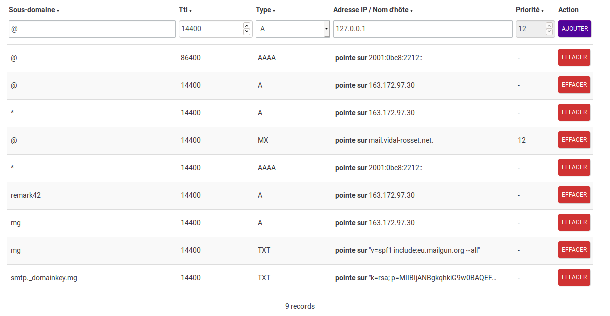

Installing comment engine Remark42
2020-01-02, updated 2020-01-02 next - previous
Remark42 is the comment engine of this blog. I describe in details its installation in this post, thinking that it could be helpful to others.
The most popular comment plugin on the web is Disqus, but it seems that there are also good reasons to avoid its installation [1,2, 3]. Among Disqus alternatives, I decided to install Remark42. I am going to give a description of my server and the files that I have used for this installation of Remark.
1 My server
My dedicated server is the cheapest Dedibox at Online.net, it runs with Debian 10, like my PC. As we are going to see it, it is important to get a dedicated server to install exactly what you need for your website.
2 Remark42 configuration
The Reamde.md is a full documentation for the installation of Remark42 and it is necessary to read it carefully.
- First, Docker is “the recommended way to run remark42”, therefore I had to install Docker on my Debian server, and I followed this documentation to install Docker Compose, because the recommended installation of Remark42 is done via this docker-compose.yml. There is a sufficient documentation on Docker compose in this “Docker for beginners”, because the main things that you need to know to install Remark42 after having installed Docker and Docker Compose is that you have to adapt this docker-compose.yml file to your need, to put in into a readable directory of your server and run few command lines inside this directory. My advice: download this docker-compose.yml file into a directory of your PC and only after having changes according to your needs, upload it on the home/yourlogin of your box, to move it after, as root, into a directory of your server. For example, once adapted to the name of your server, this minimal configuration should work:
version: '2' services: remark: build: . image: umputun/remark42:latest container_name: "remark42" hostname: "remark42" restart: always logging: driver: json-file options: max-size: "10m" max-file: "5" # uncomment to expose directly (no proxy) ports: - "8080:8080" #VERY IMPORTANT : DO NOT CHANGE THIS. environment: - REMARK_URL=https://remark42.mydomain #in my case: https://remark42.vidal.rosset.net - SECRET=******** # this secret code must be the root password in your server. - SITE=remark42.mydomain # must be the same in the html script - STORE_BOLT_PATH=/srv/var/db - BACKUP_PATH=/srv/var/backup - DEBUG=true - AUTH_ANON=true # - ADMIN_PASSWD=password volumes: - ./var:/srv/var
But, with this minimal configuration above, comments would be given only anonymously and you’ll miss to moderate them. Therefore, it is of course better to adapt at least the minimal docker-compose.yml given by Umputun. Replace in Umputun’s example https://demo.remark42.com by http://remark42.yourdomain.com or by https://remark42.yourdomain.com, SITE=YOUR_SITE_ID by SITE=the-name-you-want, SECRET=abcd-123456-xyz-$%^& by SECRET=the-root-passwd, and for the correct values of AUTH_GITHUB_CID=12345667890 and AUTH_GITHUB_CSEC=abcdefg12345678, itt requires that you get first, a Github account, second that you create a new “OAuth App” under this account, as it is explained in this section of the Readme.
I come back to http://remark42.yourdomain.com or by https://remark42.yourdomain.com for more explanation. This configuration requires first that you have if the nginx setup given in /etc/nginx/nginx.conf the following lines (see this post):
location / {
expires $expires;
proxy_redirect off;
# proxy_set_header Host $host;
proxy_set_header Host $http_host;
proxy_set_header X-Real-IP $remote_addr;
proxy_set_header X-Forwarded-For $proxy_add_x_forwarded_for;
proxy_set_header X-Forwarded-Proto $scheme;
proxy_read_timeout 1m;
proxy_connect_timeout 1m;
proxy_pass http://127.0.0.1:8080; # mettre l'URL de l'instance Node.js ici
}
and second that you declare remark42 as A record in your DNS, see this example: 
But note that it is possible to configure remark42 without a subdomain.
Last, here is now the docker-compose.yml file that is var/www/vidal-rosset/html/remark in my Debian server:
version: '2' services: remark: build: . image: umputun/remark42:latest container_name: "remark42" hostname: "remark42" restart: always logging: driver: json-file options: max-size: "10m" max-file: "5" # uncomment to expose directly (no proxy) ports: - "8080:8080" #VERY IMPORTANT : DO NOT CHANGE THIS. environment: - REMARK_URL=https://remark42.mydomain #in my case: https://remark42.vidal.rosset.net - SECRET=******** # this secret code must be the root password in your server. - SITE=remark42.mydomain # must be the same in the html script - STORE_BOLT_PATH=/srv/var/db - BACKUP_PATH=/srv/var/backup - DEBUG=true - AUTH_GOOGLE_CID=130202230458-xxxxxxxxxxxxxxxxxi9645f1.apps.googleusercontent.com - AUTH_GOOGLE_CSEC=PZtxxxxxxxxxxxxxxxQW - AUTH_GITHUB_CID=bexxxxxxxxxxx5b - AUTH_GITHUB_CSEC=cdb50xxxxxxxxxxxxxxxx56 - AUTH_FACEBOOK_CID=4xxxxxxxxxxx9 - AUTH_FACEBOOK_CSEC=6axxxxxxxxxxxxxxba - NOTIFY_TYPE=telegram - NOTIFY_QUEUE=100 - NOTIFY_TELEGRAM_TOKEN=1049699145:xxxxxxxxxxxxxxxxinc - NOTIFY_TELEGRAM_CHAN=mychannel - NOTIFY_TELEGRAM_TIMEOUT=5s - AUTH_YANDEX_CID=39xxxxxxxxxxxxxxxe1 - AUTH_YANDEX_CSEC=54d8xxxxxxxxxxxxxxxxxxxd1 - ADMIN_SHARED_ID=google_45869ca6993225abf667d95eaxxxxxxxxx,github_8721fd76bxxxxxxxx - AUTH_EMAIL_ENABLE=true - AUTH_EMAIL_HOST=smtp.eu.mailgun.org - AUTH_EMAIL_PORT=465 - AUTH_EMAIL_FROM=postmaster@mg.vidal-rosset.net - AUTH_EMAIL_SUBJ=remark42 confirmation - AUTH_EMAIL_CONTENT_TYPE=text/html - AUTH_EMAIL_TLS=true - AUTH_EMAIL_USER=postmaster@mg.vidal-rosset.net - AUTH_EMAIL_PASSWD=5697xxxxxxxxxxxxxx-fxxxxx4-dxxxxxxx3 - AUTH_EMAIL_TIMEOUT=10s # - ADMIN_PASSWD=password volumes: - ./var:/srv/var
To configure your own Google (resp. Facebook, resp. Yandex) accounts authentication, follow again Umputun’s explanations in the Readme.
To get email authentication, I followed the advice of Umputun; I created a mailgun account, I declared DNS as recommended, and I filled the part of docker-compose.yml that is about AUTH_EMAIL, following the first setup that I received from Mailgun as soon mg.vidal-rosset.net was checked as a valid subdomain.
That’s it for Remark42 setup, let’s go now to its installation.
3 Remark42 installation
If your docker-compose.yml is correctly written, the installation of Remark42 via Docker is very simple. To show it, I am going to uninstall it and reinstall it, because in giving these command lines, you will always be able to make a new install if necessary. First, the SSH connection in my /home/joseph into my server, root passwd, and change of directory to go into /var/www/vidal-rosset/html/remark:
joseph@163.172.97.30's password: Linux mail.vidal-rosset.net 4.19.0-6-amd64 #1 SMP Debian 4.19.67-2+deb10u1 (2019-09-20) x86_64 The programs included with the Debian GNU/Linux system are free software; the exact distribution terms for each program are described in the individual files in /usr/share/doc/*/copyright. Debian GNU/Linux comes with ABSOLUTELY NO WARRANTY, to the extent permitted by applicable law. Last login: Mon Nov 11 10:02:25 2019 from 91.168.121.220 joseph@mail:~$ su - Password: root@mail:~# cd /var/www/vidal-rosset/html/remark/ root@mail:/var/www/vidal-rosset/html/remark#
With cat docker-compose.yml I check the content of
docker-compose.yml in remark directory. Remark42 is installed in a
container, I need to know its ID in order to delete it before
reinstalling it:
root@mail:/var/www/vidal-rosset/html/remark# docker container ls -a
CONTAINER ID IMAGE COMMAND CREATED STATUS PORTS NAMES
55c87ca05274 umputun/remark42:latest "/entrypoint.sh serv…" 26 hours ago Up 10 hours (healthy) 0.0.0.0:8080->8080/tcp remark42
I force the remove of CONTAINER ID 55c87ca05274:
root@mail:/var/www/vidal-rosset/html/remark# docker rm -f 55c87ca05274 55c87ca05274 root@mail:/var/www/vidal-rosset/html/remark#
I check that there no more valid container with docker container ls
-a again:
root@mail:/var/www/vidal-rosset/html/remark# docker container ls -a CONTAINER ID IMAGE COMMAND CREATED STATUS PORTS NAMES root@mail:/var/www/vidal-rosset/html/remark#
Now the installation of Remark42 in two steps. First step:
root@mail:/var/www/vidal-rosset/html/remark# docker pull umputun/remark42 Using default tag: latest latest: Pulling from umputun/remark42 Digest: sha256:ce85044f6b8d53a9a21b9825929d65fea5867d1bd2d37026222831feaaf3d3a3 Status: Image is up to date for umputun/remark42:latest docker.io/umputun/remark42:latest
Second step:
root@mail:/var/www/vidal-rosset/html/remark# docker-compose pull && docker-compose up -d Pulling remark ... done Creating remark42 ... done root@mail:/var/www/vidal-rosset/html/remark#
Finally, I check via this command that Remark42 is correctly connected:
root@mail:/var/www/vidal-rosset/html/remark# curl http://127.0.0.1:8080/ping pongroot@mail:/var/www/vidal-rosset/html/remark#
In fact, “pong” is the output to the ping input, you must read:
root@mail:/var/www/vidal-rosset/html/remark# curl http://127.0.0.1:8080/ping pong root@mail:/var/www/vidal-rosset/html/remark#
That’s it. Remark42 is installed in the server.
Now in each web page that I want to see the comments allowed, I paste this code:1
<script> var remark = {host: "https://remark42.vidal-rosset.net", // hostname of remark server, same as REMARK in backend config, // e.g. "https://demo.remark42.com" site: 'remark42.vidal-rosset.net',components: ['embed', 'last-comments', 'counter'], // optional param; which components to load. default to ["embed"] // to load all components define components as ['embed', 'last-comments', 'counter'] // available component are: // - 'embed': basic comments widget // - 'last-comments': last comments widget, see `Last Comments` section below // - 'counter': counter widget, see `Counter` section below // url: '', // optional param; if it isn't defined // `window.location.origin + window.location.pathname` will be used, // // Note that if you use query parameters as significant part of url // (the one that actually changes content on page) // you will have to configure url manually to keep query params, as // `window.location.origin + window.location.pathname` doesn't contain query params and // hash. For example default url for `https://example/com/example-post?id=1#hash` // would be `https://example/com/example-post`. // // The problem with query params is that they often contain useless params added by // various trackers (utm params) and doesn't have defined order, so Remark treats differently // all this examples: // https://example.com/?postid=1&date=2007-02-11 // https://example.com/?date=2007-02-11&postid=1 // https://example.com/?date=2007-02-11&postid=1&utm=google // // If you deal with query parameters make sure you pass only significant part of it // in well defined order max_comments: 10, // optional param; if it isn't defined default value (15) will be used theme: 'light', // optional param; if it isn't defined default value ('light') will be used // page: '' // optional param; if it isn't defined `document.title` will be used }; (function(c) { for(var i = 0; i < c.length; i++){ var d = document, s = d.createElement('script'); s.src = remark + '/web/' +c[i] +'.js'; s.defer = true; (d.head || d.body).appendChild(s); } })(remark || ['embed', 'last-comments', 'counter']); </script> <div id="remark42"></div>
I hope that this post will help you to install Remark42. Feel free to send your remark here!

Footnotes:
More exactly, I put in the Footer section of org-export-head code
this html code between #+BEGIN_EXPORT html and #+END_EXPORT, in
replacement of the code for Disqus given by Ivan.